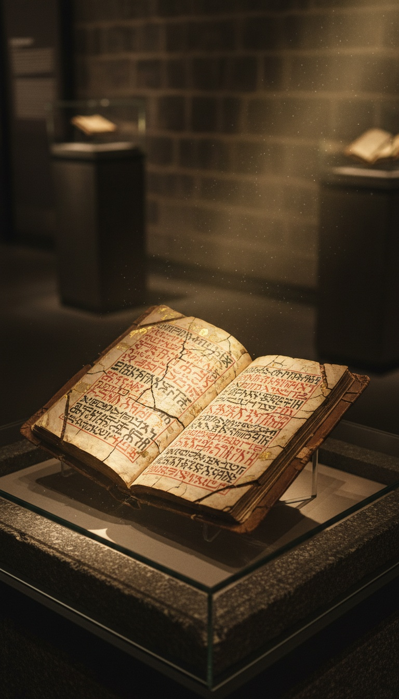

The man chosen to survive the flood came out of the womb lit up like a lamp, and the first person to see him decided the boy was the child of a fallen angel.
That scene sits in chapter 106 of the Book of Enoch, a text the New Testament letter of Jude quotes by name, copied by hand in Ethiopia for two thousand years, and pulled in Aramaic fragments from Cave 4 at Qumran in 1952. The birth of Noah is the last story in the book, and it reads like a family trying to contain something they could not explain.

The Birth Scene the Scribes Kept
The Ethiopic text is blunt. Lamech's wife bore a son whose body was white as snow and red as a blooming rose, whose hair was white as wool, and whose eyes, when he opened them, lit the whole house like the sun (1 Enoch 106:2). Then the newborn stood up in the midwife's hands, opened his mouth, and spoke to the Lord of righteousness. Lamech ran from the room to his father Methuselah.
This is a text with a chain of custody. The Scottish explorer James Bruce carried three Ethiopic manuscripts of Enoch out of Gondar in 1773. One is Bodleian MS Bruce 74 in Oxford, another sits in the Bibliothèque nationale de France in Paris. Richard Laurence, Regius Professor of Hebrew at Oxford, published the first English translation in 1821. Then Cave 4 at Qumran gave up eleven Aramaic manuscripts of Enoch, and the one catalogued 4Q204 carries fragments of this exact birth narrative, chapters 106 and 107, published by Józef Milik at Oxford in 1976. The glowing baby was already in the Aramaic before Christ was born.
Lamech Names the Fathers
Lamech's words to Methuselah are precise. "I have begotten a strange son. He is not like a man, but resembles the children of the angels of heaven. His nature is different, and he is not like us" (1 Enoch 106:5). Then the accusation: "It seems to me that he is not sprung from me but from the angels."
Lamech knew what those children looked like. Genesis 6:4 puts the Nephilim, bred by the sons of God on human women, on the earth "in those days, and also afterward." Enoch chapter 6 says the Watchers came down on Mount Hermon in the days of Jared, Lamech's great-grandfather, and chapter 7 says their children were giants who devoured mankind. Lamech was born into a world where angel-human hybrids were a known category with a known look. He studied his newborn and filed him there.
The Wife Who Swore by the Great Holy One
A second scroll tells the confrontation from inside the marriage. The Genesis Apocryphon, one of the original seven Dead Sea Scrolls pulled from Cave 1 in 1947, unrolled by Nahman Avigad and Yigael Yadin in 1956 and held today in the Shrine of the Book at the Israel Museum in Jerusalem, gives Lamech's wife a name: Batenosh. In column 2, Lamech says it to her face. "I thought in my heart that the conception was from the Watchers, and the seed from the Holy Ones."
Batenosh does what a terrified wife does. She reminds him of the night itself, she weeps, and then she swears by the Great Holy One, the King of Heaven, that the seed and the pregnancy came from him alone. The Book of Jubilees, found at Qumran in more than a dozen copies, confirms her identity: Betenos, daughter of Barakiel, wife of Lamech (Jubilees 4:28).
Lamech's answer to a sworn oath from his own wife is to leave the house. 1 Enoch 106:8 sends Methuselah "to the ends of the earth" to find Enoch, the man Genesis 5:24 says walked with God and "was not, for God took him." The Genesis Apocryphon names the place: Parwain. A husband who believed his wife would have stayed home. This one sent for a man living among the angels.
When the baby opened his eyes the whole house lit up like the sun, and his father ran.
The Verdict from the Ends of the Earth
Enoch's answer starts with the Watchers. He tells Methuselah that in the days of Jared some from the height of heaven transgressed the word of the Lord, took wives, and bore giants "not according to the spirit but according to the flesh" (1 Enoch 106:13-17). Then he rules on the boy. The child is Lamech's, and the light on him is a sign. Name him Noah, "for he shall be left to you," and he and his sons shall be saved when the earth is cleansed of the corruption (106:16-18).
Read that the way Lamech would have heard it. His son was made to glow on purpose, by the same power that was about to drown everyone else. Enoch, speaking from the angels' side of the veil, confirms the boy is different and confirms the difference was designed. The scroll describes a marked child, and the mark meant survival. Columns 3 and 4 of the Genesis Apocryphon, where the rest of Enoch's answer would sit, are the most damaged part of the entire scroll.
Perfect in His Generations
Genesis 6:9 says "Noah was a just man and perfect in his generations." The Hebrew is tamim, and its home is Leviticus. Leviticus 22:21 uses tamim for the sacrificial animal that "shall be perfect to be accepted; there shall be no blemish therein." It is a body word. A breeding word. Genesis attaches it to Noah's generations, his line, in the same chapter that introduces the sons of God taking human wives.
Rashi, writing on Genesis 6:9 in Troyes around 1090, records that the sages already argued over the phrase, some reading it as absolute praise and others as praise relative to a rotten age. Both camps agree on what "his generations" means. It means the line he came from. Ben Sira 44:17, written in Jerusalem around 180 BC, says it plainly: "Noah was found perfect and righteous; in the time of wrath he was taken in exchange."
Now the counter-argument. In 1958 the London ophthalmologist Arnold Sorsby published a letter in the British Medical Journal titled "Noah, an albino," proposing the Enoch text as the earliest clinical description of albinism: white skin, white hair, sensitive eyes. It is a neat diagnosis of two lines and it collapses on the third. Albinism changes pigment. The scroll describes a light source, and a newborn who stood up and spoke. Sorsby also skips the detail that matters most, which is why the men of Lamech's generation read white hair and burning eyes as the signature of the Watchers' children. They knew the signature because they had seen the children.
Every Flood Survivor Was Set Apart
The Weld-Blundell Prism in the Ashmolean Museum at Oxford, catalogued WB 444, lists eight kings who reigned before the flood for a combined 241,200 years, then says "the Flood swept over." Tablet XI of the Epic of Gilgamesh, the piece George Smith read at the British Museum in 1872, has the survivor Utnapishtim made "like the gods" once the water goes down. The Sumerian flood tablet from Nippur, CBS 10673 in the Penn Museum in Philadelphia, gives Ziusudra "life like a god" and "eternal breath."
Every flood survivor in the ancient Near East comes out of the water as something more than a man. Genesis keeps the pattern quietly. Noah lives 950 years (Genesis 9:29) and his three sons found every nation on earth. The Book of Enoch tells you when the something-more started. It started in the delivery room.
Here is the part that should keep you up. Every human alive descends from the eight people on that ark. Genesis 6:4 says the Nephilim were on the earth in those days "and also afterward," meaning the water missed some of them. And the man chosen to carry the human line through the flood was born with a light on him that his own father read as the mark of the angels.
Whether Noah was human is already settled inside the text. His father asked, his wife swore, and Enoch answered from the far side of the world. The open question is what kind of human was built to survive, and whether the thing that glowed in Lamech's house is still inside us. Tell me in the comments which line you think came through the ark.
Before you go
7 books the Vatican doesn't want you reading. Free PDF — the texts they cut, with sources. Joined by 140+ Inner Circle members.
No spam. Unsubscribe anytime.
Go deeper
The Hidden Canon, Vol. I — Enoch. Jubilees. Thomas. Mary. Judas. 90 pages, 14 chapters, every receipt cited. The books your Bible quietly removed.
Read the Canon →Books that informed this investigation
As an Amazon Associate, Hidden Epoch earns from qualifying purchases. Cost to you: nothing.
Research safely
The VPN we use to research without being tracked. First 3 months free.
Get NordVPN →